Noaptea de Ajun pe Secția A
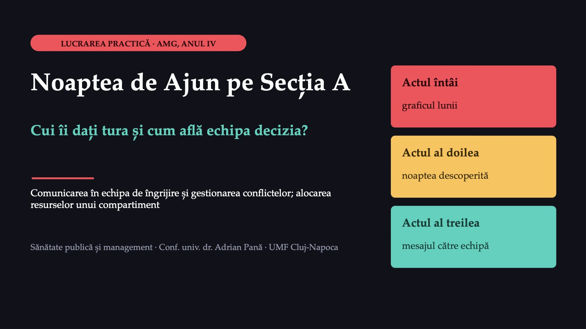
1 / 41Două ore, trei acte, un singur caz
![DESFĂȘURAREA Două ore, trei acte, un singur caz Momentul Ce faceți Deschiderea Cazul Secției A și cele trei acte Actul întâi Prima decizie, normativul de personal, norma lunii Graficul săptămânii Pasul 1 al fișei, în echipe Actul al doilea Noaptea de Ajun, a doua decizie, ce spune legea, pasul 2 Actul al treilea A treia decizie, stilurile, mesajul către echipă, pasul 3 Sinteza Ce faceți diferit, biletul de ieșire Vot individual, rezultat proiectat o singură dată. Fișa: în echipe de 3–4; fiecare își predă propria fișă.](diapozitive/LP06/002.jpg) 2 / 41
2 / 41La finalul lucrării veți putea
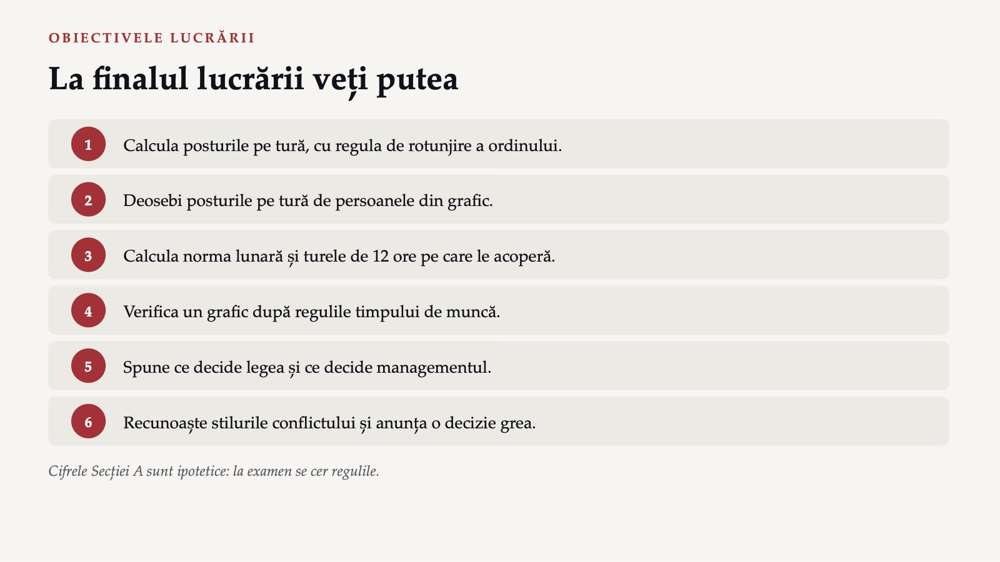
3 / 4130
![ACTUL 1 · SITUAȚIA · CAZ CONSTRUIT Secția A, 1 decembrie: Mara face graficul Caz construit pentru curs: oamenii și cifrele sunt ipotetice; regulile sunt cele reale. 30 de paturi de medicină internă 12 asistenți; Mara, asistenta-șefă, nu intră în ture. Tura de zi 07:00–19:00 · trei asistenți pe secție Tura de noapte 19:00–07:00 · mai puțini Graficul pe decembrie aprobat și afișat înainte de începutul lunii Corina S. concediu de odihnă 21 decembrie – 3 ianuarie, programat Gândiți-vă după ce criteriu ați împărți nopțile de sărbătoare?](diapozitive/LP06/004.jpg) 4 / 41
4 / 41Cuvintele cu care lucrăm două ore
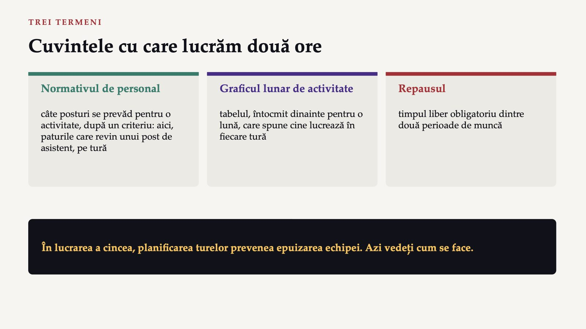
5 / 41Câți asistenți trebuie noaptea, la 30 de paturi?
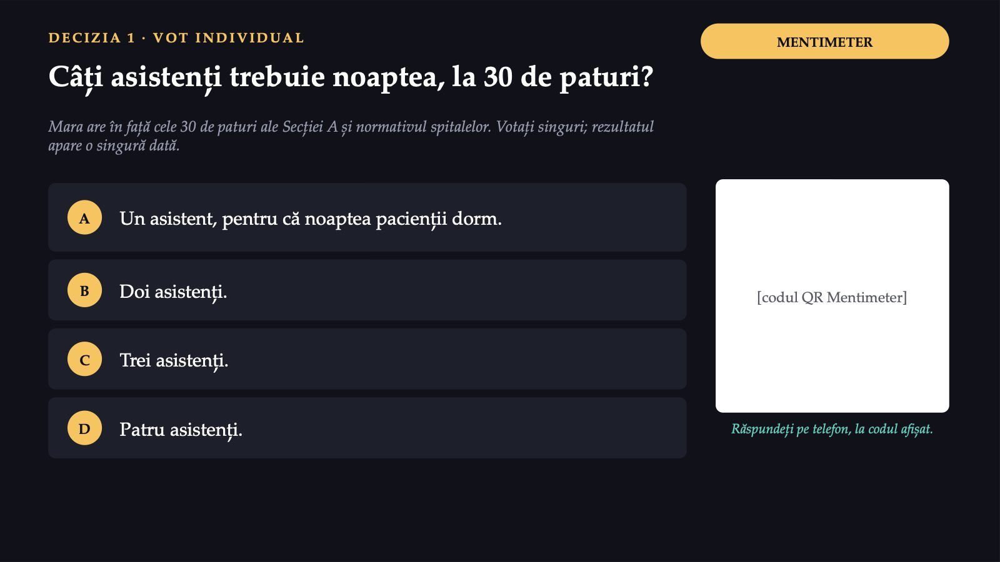
6 / 418-12
![NORMATIVUL DE PERSONAL Câte paturi revin unui post de asistent 8-12 paturi pe un post de asistent, „pe tură” Ordinul ministrului sănătății nr. 1 224/2010 „privind aprobarea normativelor de personal pentru asistența medicală spitalicească”. Mențiunea „pe tură” arată că intervalul privește fiecare tură, ziua ca și noaptea. „Numărul de posturi, pe categorii de personal, între limita minimă și maximă, se stabilește de managerul fiecărei unități sanitare cu personalitate juridică” Normativul fixează un minim și un maxim; între ele decide conducerea, după nevoi și după buget.](diapozitive/LP06/007.jpg) 7 / 41
7 / 41Nu e rotunjirea din matematica școlară
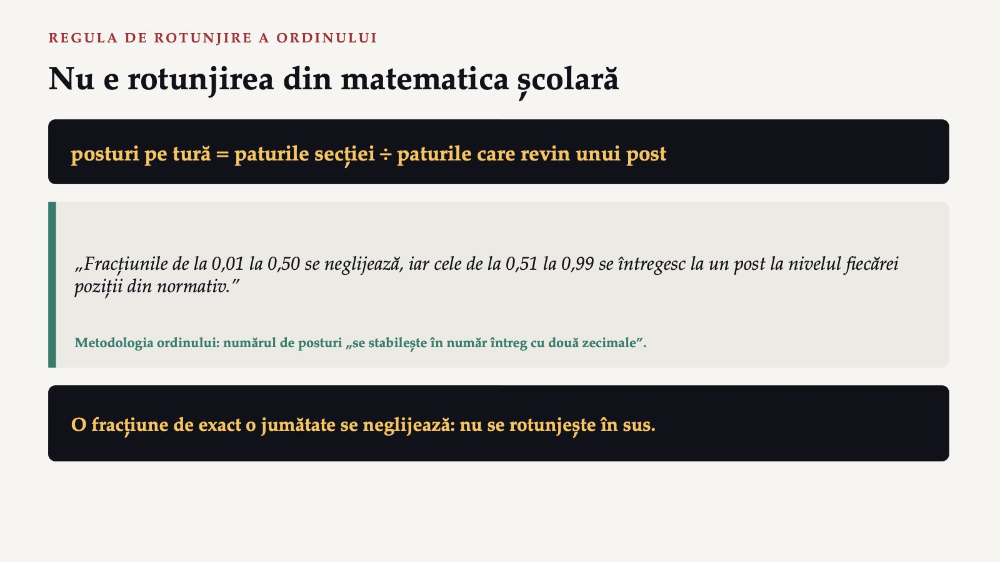
8 / 41Secția A: între 2 și 4 posturi pe tură
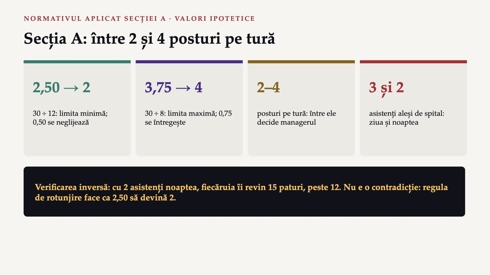
9 / 41Doi asistenți: minimul normativului
 10 / 41
10 / 41Posturile pe tură nu sunt oameni în grafic
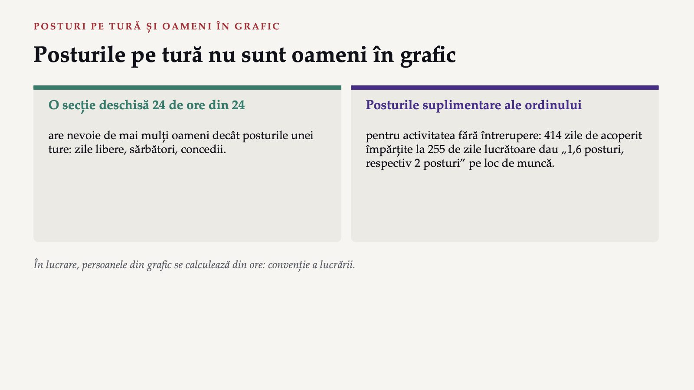
11 / 41Ziua de 8 ore, organizată în ture
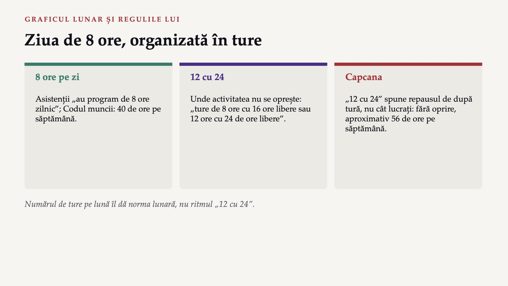
12 / 41Două limite pe care un „da” nu le ridică
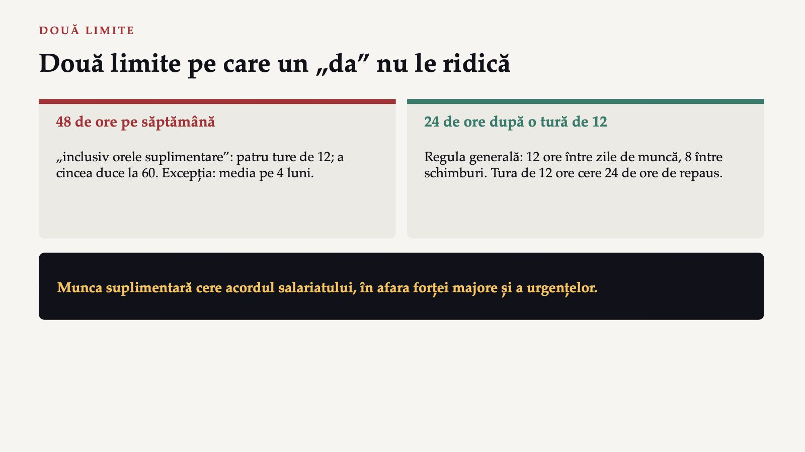
13 / 41Cine nu poate fi obligat să lucreze noaptea
![MUNCA DE NOAPTE Cine nu poate fi obligat să lucreze noaptea Munca de noapte: între orele 22 și 6; program redus cu o oră sau spor de 25% din salariul de bază. „Femeile gravide, lăuzele și cele care alăptează, precum și persoana singură din familia monoparentală nu pot fi obligate să presteze muncă de noapte.” Codul muncii. Regulamentul unităților sanitare: în aceleași situații, scutirea temporară de tura de noapte. Legea spune „nu pot fi obligate”, nu „nu pot lucra”: tura se poate propune, nu se poate impune.](diapozitive/LP06/014.jpg) 14 / 41
14 / 41Întocmit, aprobat, afișat
 15 / 41
15 / 4123
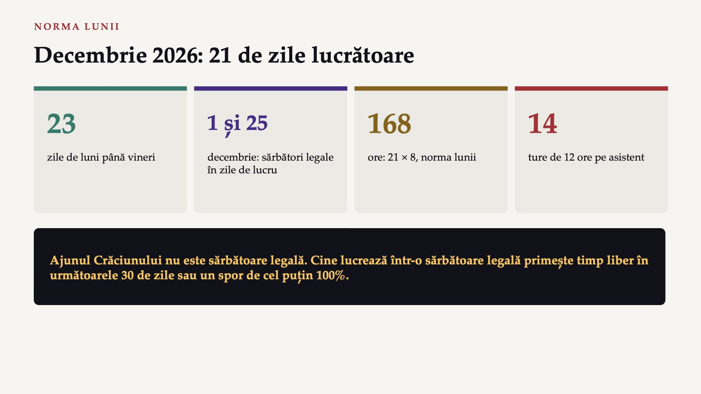
16 / 41Câți asistenți îi trebuie Secției A în decembrie
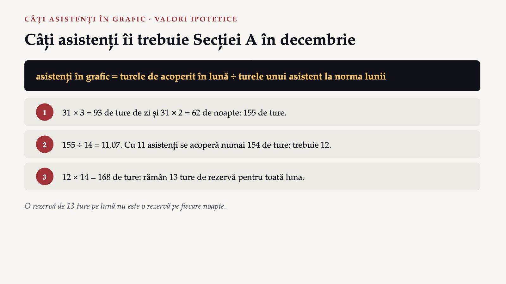
17 / 41Graficul săptămânii 21–27 decembrie
 18 / 41
18 / 41Rezolvarea se vede în formularul fișei, după ce o predați.
Rezolvarea se vede în formularul fișei, după ce o predați.
30
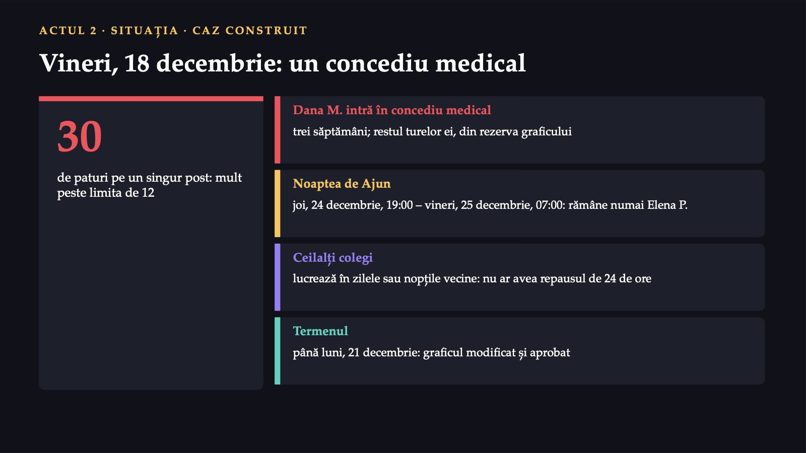
20 / 41Trei colege ar putea lua tura
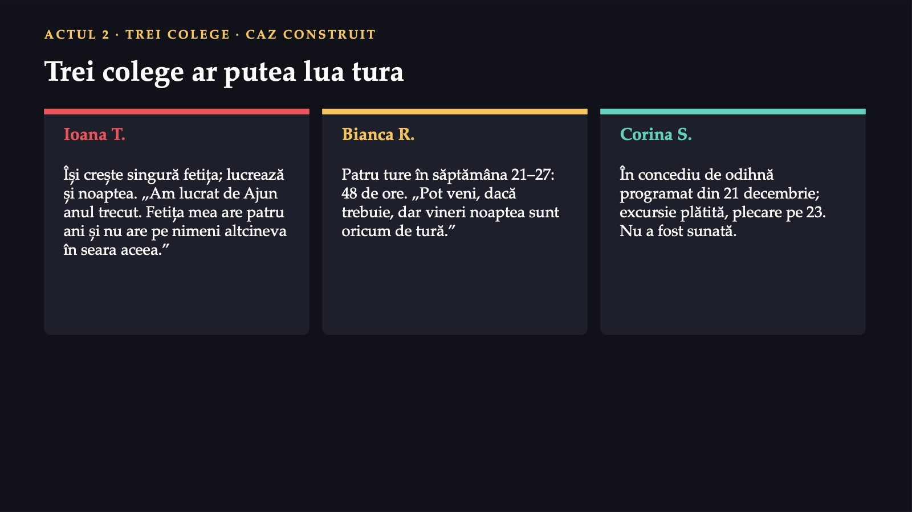
21 / 41Cui îi dați tura din 24 decembrie?
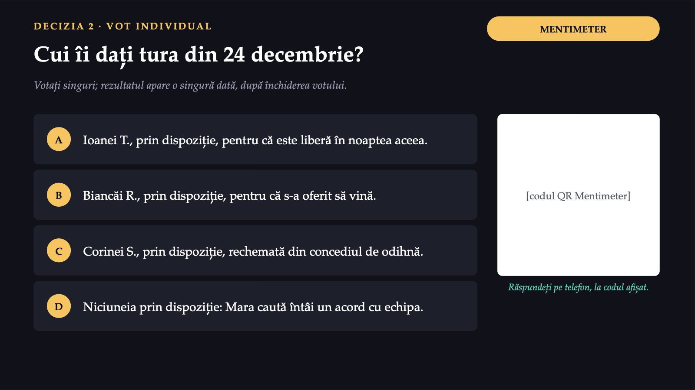
22 / 41Ioana: tura i se poate propune, nu impune
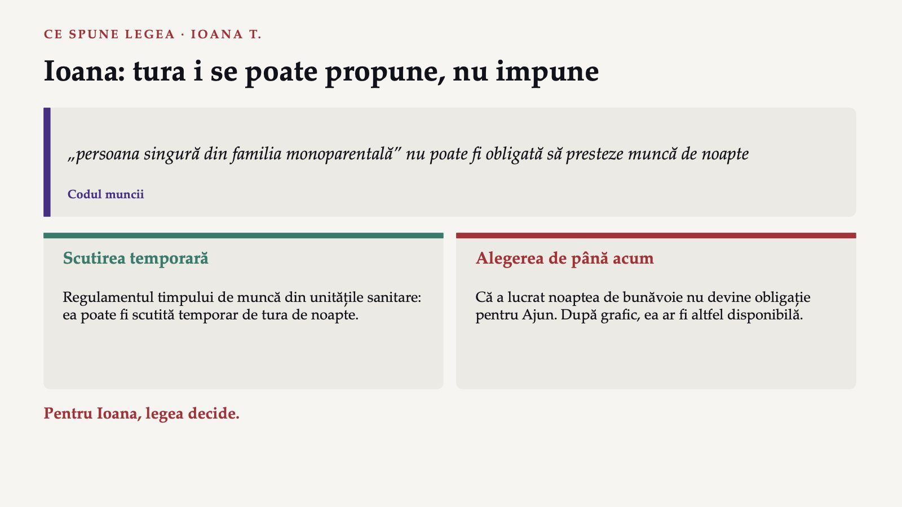
23 / 4160 de ore
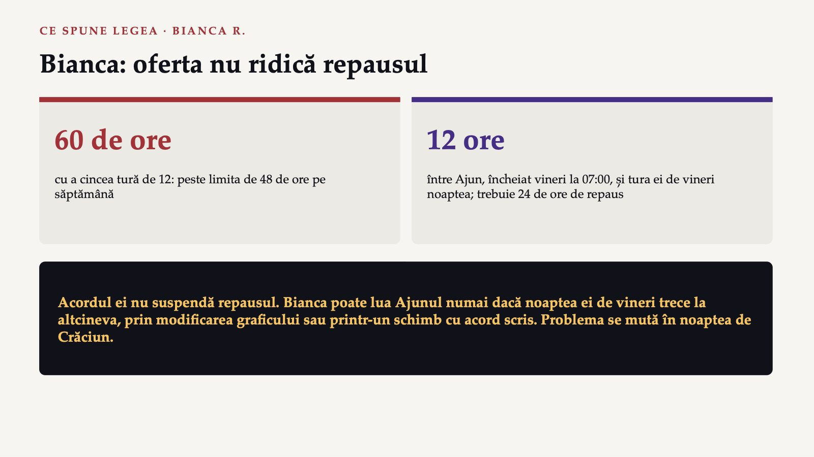
24 / 41Corina: rechemarea e excepția, cu un cost
![CE SPUNE LEGEA · CORINA S. Corina: rechemarea e excepția, cu un cost „Angajatorul poate rechema salariatul din concediul de odihnă în caz de forță majoră sau pentru interese urgente care impun prezența salariatului la locul de muncă.” Codul muncii; concediul programat se efectuează în perioada programată Costul Angajatorul suportă cheltuielile ei și ale familiei pentru revenire și prejudiciile întreruperii: excursia plătită devine cheltuiala spitalului. Aprecierea Legea nu spune dacă o noapte cu un asistent lipsă intră în „interese urgente”: e o apreciere a conducerii, care se poate contesta.](diapozitive/LP06/025.jpg) 25 / 41
25 / 41Unde se oprește legea, începe managementul
![CE NU DECIDE LEGEA Unde se oprește legea, începe managementul Legea spune ce nu se poate Nu se coboară sub limita minimă; Ioana nu poate fi obligată; Bianca nu lucrează fără repaus; Corina, numai ca excepție. Legea nu spune cine face sacrificiul. Criteriile neutre Rotația nopților de sărbătoare de la un an la altul; voluntariatul, cu o compensare cunoscută; transparența: regula se anunță înainte de grafic. Situația familială nu este, în sine, un criteriu: contează numai prin protecțiile legii. Codul muncii interzice discriminarea după „situație sau responsabilitate familială”.](diapozitive/LP06/026.jpg) 26 / 41
26 / 41A patra variantă: întâi echipa
![DECIZIA 2 · EXPLICAȚIA A patra variantă: întâi echipa 1 Toată echipa: un voluntar, cu o compensare cunoscută, sau un schimb cu acord scris; Biancăi, Ajunul în locul nopții de vineri. 2 Ioanei i se poate propune numai după aceea, fără presiune: a lucrat de Ajun anul trecut, iar rotația o pune la urmă. 3 Abia dacă nimic nu reușește: rechemarea Corinei sau acoperirea din afara secției. Primele trei variante dau tura prin dispoziție unei persoane pe care legea o protejează. Soluția intră în grafic printr-o modificare aprobată de conducere.](diapozitive/LP06/027.jpg) 27 / 41
27 / 41Ce poate cere Mara fiecărei colege
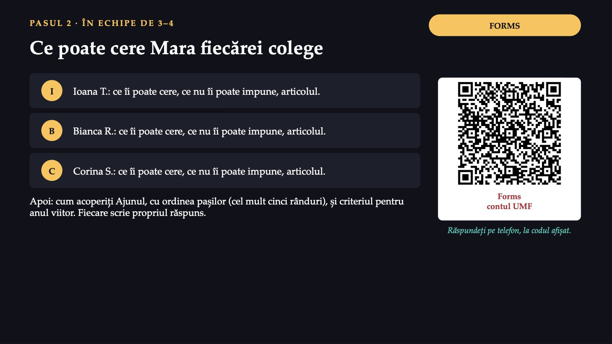
28 / 41Rezolvarea se vede în formularul fișei, după ce o predați.
Rezolvarea se vede în formularul fișei, după ce o predați.
22,22%
![CONFLICTUL ÎN ECHIPA DE ÎNGRIJIRE Un conflict despre o resursă rară Interese, nevoi sau așteptări care nu pot fi satisfăcute toate deodată: Elena are nevoie de un coleg, Ioana de o seară acasă, Bianca de repaus, Corina de concediu, Mara de o secție legală. 22,22% conflictele interpersonale din echipă 20,00% problemele de alocare a resurselor 17,78% valorile personale față de obiectivele organizației Frecvența temelor în cele 14 studii ale unei sinteze sistematice despre managerii din îngrijiri, publicată online în 2024; nu descrie spitalele din România.](diapozitive/LP06/030.jpg) 30 / 41
30 / 41Mara a întrebat întâi toată echipa
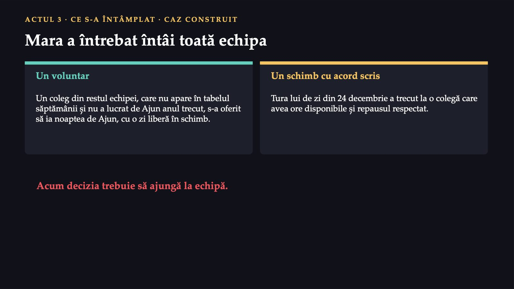
31 / 41Cum anunțați decizia echipei?
![MENTIMETER DECIZIA 3 · VOT INDIVIDUAL Cum anunțați decizia echipei? Votați singuri; rezultatul apare o singură dată. A Afișați graficul modificat la avizier, fără alt comentariu: graficul vorbește singur. B Scrieți în grupul de mesaje al secției cine a refuzat tura și de ce, ca să nu rămână bănuieli. C Vorbiți întâi cu cei implicați, apoi spuneți echipei situația, regula, soluția și rotația de anul viitor, fără motive personale, și afișați graficul. D Amânați anunțul și afișarea graficului modificat până după sărbători, ca să nu stricați atmosfera. [codul QR Mentimeter] Răspundeți pe telefon, la codul afișat.](diapozitive/LP06/032.jpg) 32 / 41
32 / 41Cinci stiluri
![STILURILE DE GESTIONARE A CONFLICTULUI Cinci stiluri Stilul (strategia) Ce înseamnă Dominarea (competiția) copleșirea celeilalte părți prin decizie sau prin poziție Îngăduința (acomodarea) răspunsul la cerințele și preocupările celeilalte părți Evitarea neglijarea deliberată a conflictului Compromisul ambele părți cedează ceva pentru un acord Integrarea (colaborarea) o soluție nouă, pentru interesele ambelor părți În 22 de studii (2014–2024), asistenții au folosit cel mai des acomodarea și colaborarea; competiția, cel mai rar. Stilul integrator, deși raportat, nu este observat frecvent.](diapozitive/LP06/033.jpg) 33 / 41
33 / 41Niciun stil nu e bun în orice situație
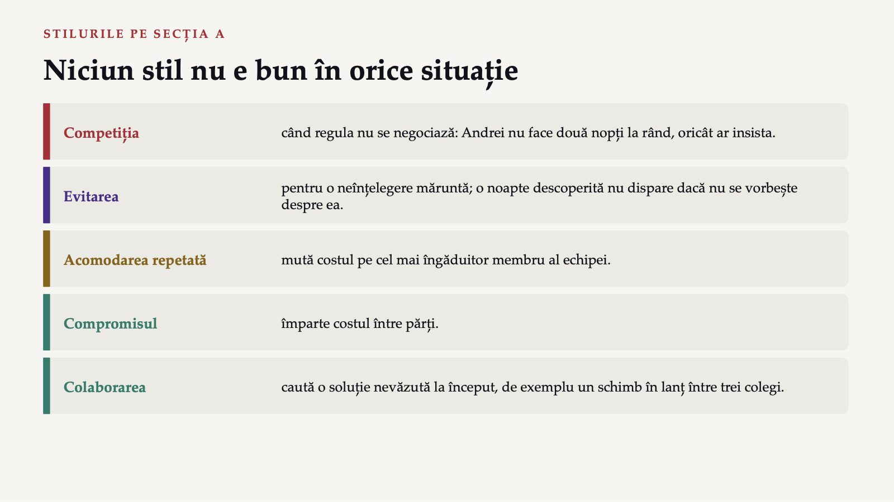
34 / 41Un mesaj cu structură
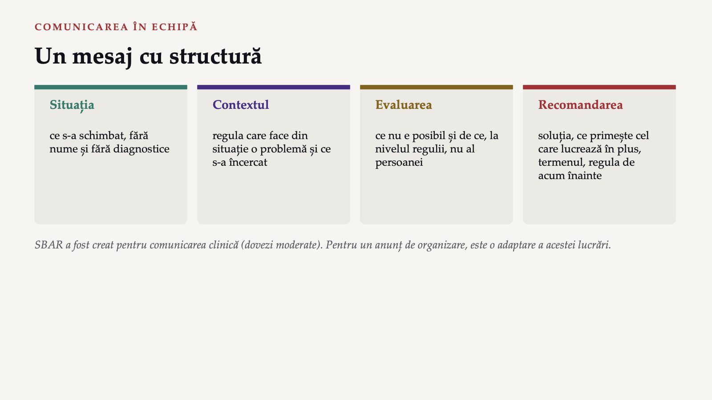
35 / 41Cine află primul și ce nu se spune
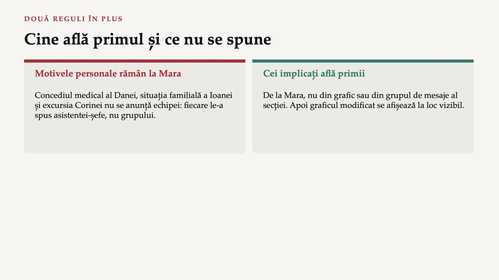
36 / 41A treia variantă: întâi cei implicați, apoi echipa
 37 / 41
37 / 41Mesajul Marei către echipă
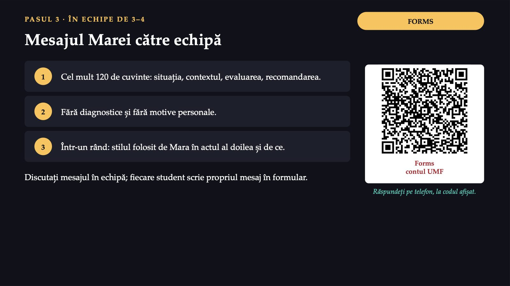
38 / 41Rezolvarea se vede în formularul fișei, după ce o predați.
Rezolvarea se vede în formularul fișei, după ce o predați.
Trei acte, o regulă de lucru
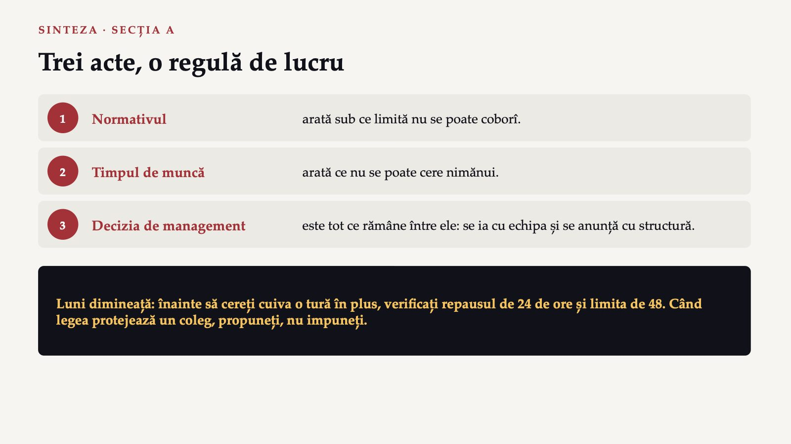
40 / 41Trei întrebări pentru final
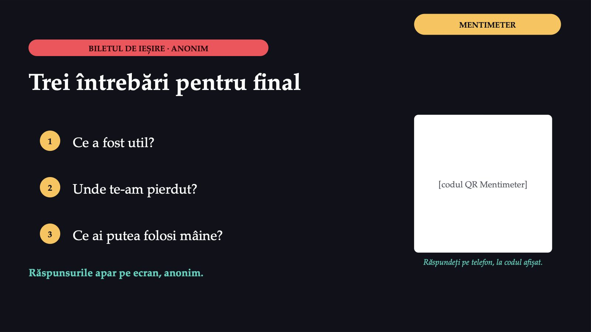
41 / 41Săgeți sau spațiu: navigare · O: vedere de ansamblu · N: notele prezentatorului · F: ecran complet · Esc: închidere